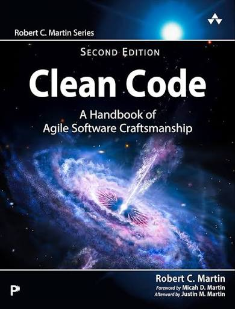
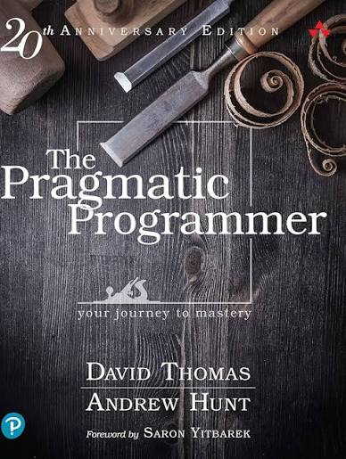
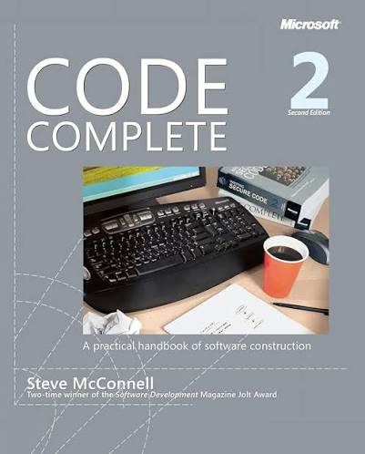

Assignment 4.2: Build a Web Page Exercise - Part 4
Clean Code

(Author: Robert C. Martin)
The Pragmatic Programmer

(Author: Andrew Hunt & David Thomas)
Code Complete

(Author: Steve McConnell)
Back to Landing Page